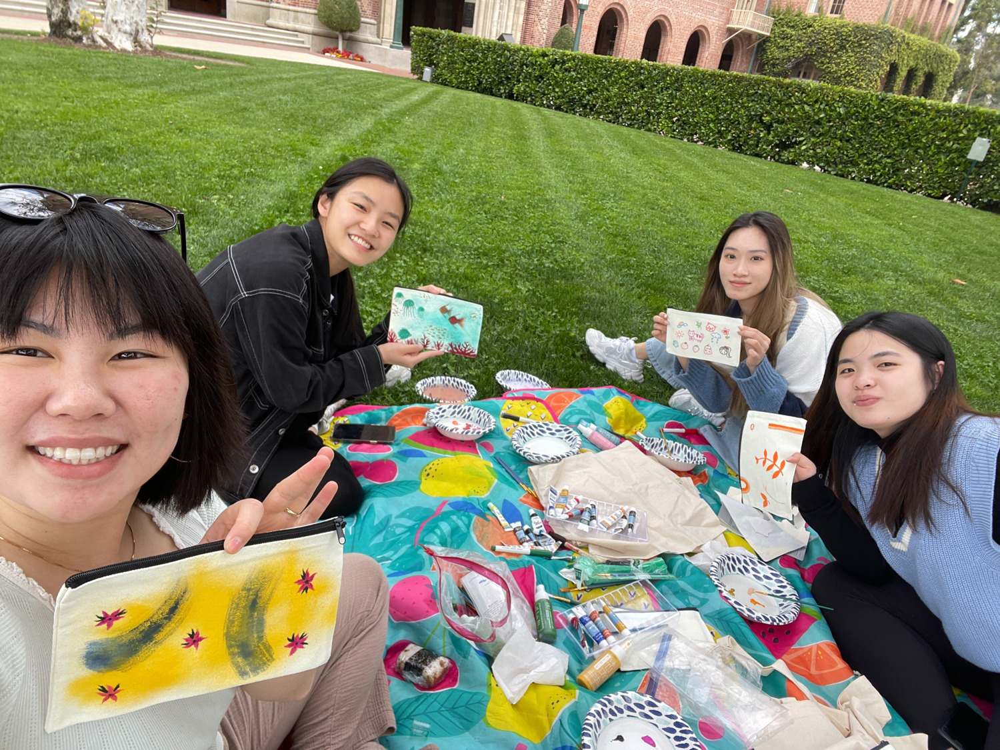
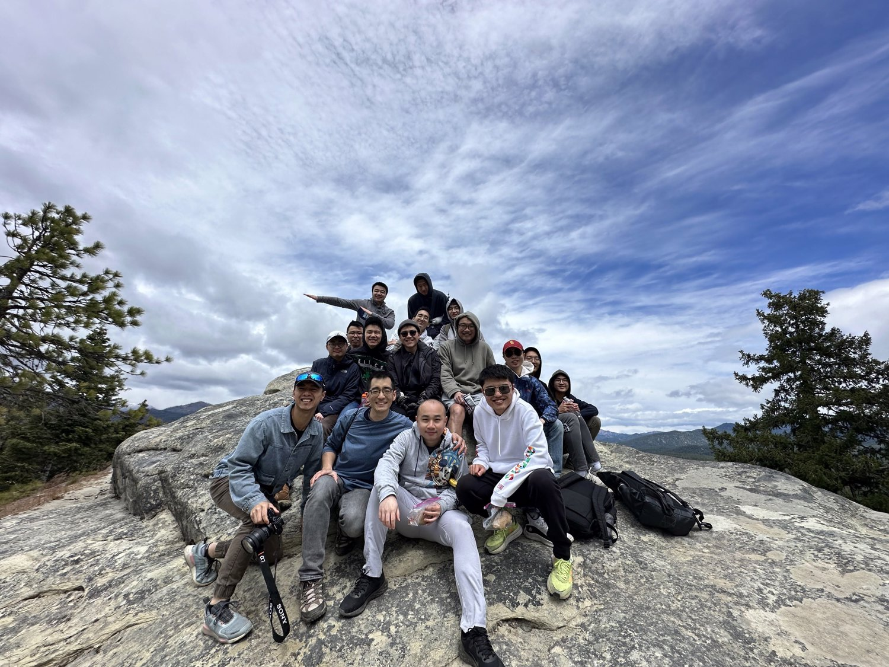
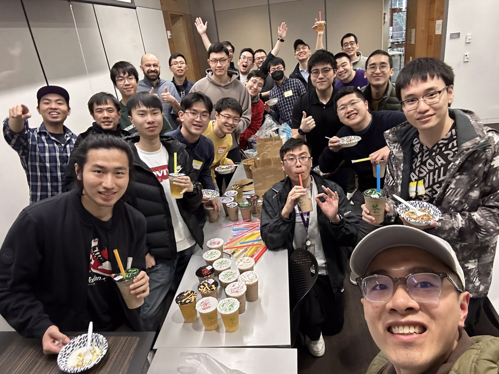
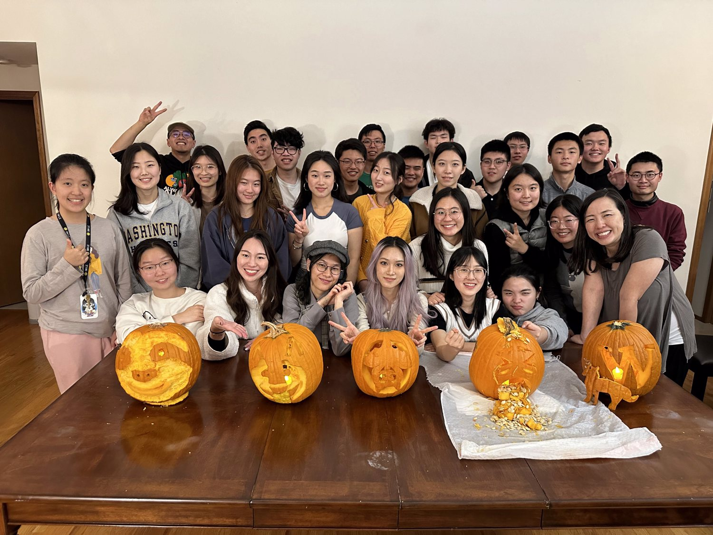
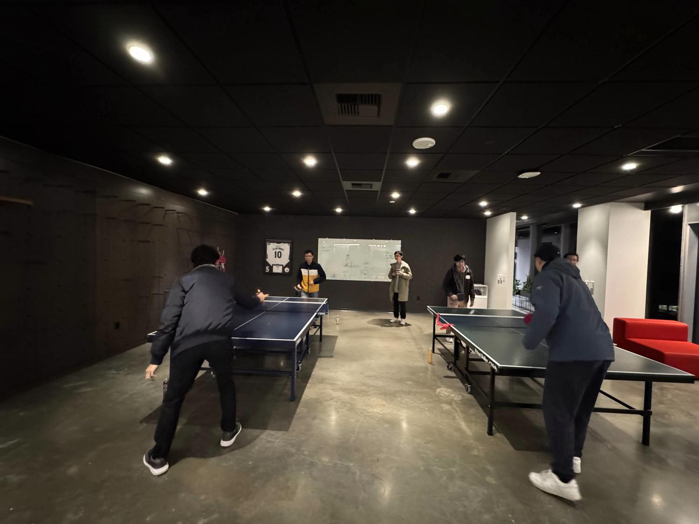

Welcome to ISM! ISM is an international student group that many of us call our “home away from home.” It’s where we’ve come to build meaningful friendships as we transitioned to America and journeyed through college life together. IUSM is also a place where International Christian students can grow in their faith, or students who are curious can openly explore Christianity and life’s big questions. We also have a lot of fun too! Eating good food together, hanging out with each other, and exploring Seattle and Washington’s great outdoors.
ISM is the more official name for the club. It has two main branch: IUSM and IGSM, respectively stands for Undergraduate and Graduate. So, don't be confused! I'm in IUSM!!
Plus, we also celebrate speacial holidays, like Halloween.




